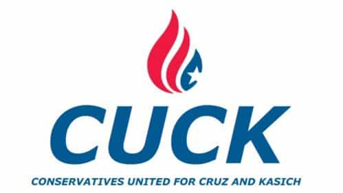

< < < Back
The Bonehead Alliance Between Ted Cruz And John Kasich Will Do Nothing To Stop Trump – Return Of Kings
With Donald Trump having scored a crushing victory in last week’s primary in New York and his sweep last night of the mid-Atlantic primaries, the GOP establishment is in emergency, break glass mode. This past weekend, Ted Cruz and John Kasich announced that they have formed a political pact in a last ditch effort to keep Trump from winning enough delegates to get the nomination on the first ballot of the Republican convention:
Due to the fact that the Indiana primary is winner-take-all statewide and by congressional district, keeping Trump from winning a plurality in Indiana is critical to keeping him under 1237 bound delegates before Cleveland. We are very comfortable with our delegate position in Indiana already, and given the current dynamics of the primary there, we will shift our campaign’s resources West and give the Cruz campaign a clear path in Indiana.
In turn, we will focus our time and resources in New Mexico and Oregon, both areas that are structurally similar to the Northeast politically, where Gov. Kasich is performing well. We would expect independent third-party groups to do the same and honor the commitments made by the Cruz and Kasich campaigns.
Much like the Wisconsin primary earlier this month, the GOP views next week’s primary in Indiana as Cuckster’s Last Stand, the last chance they have to force a brokered convention. With Cruz mathematically eliminated from the race due to his humiliating defeat in New York—coming in a distant third and winning no delegates—denying Trump a majority of delegates is the only way he’ll have even a glimmer of a chance of getting the nomination.
Unfortunately for the cucksultant class, the Cruz-Kasich deal looks like it will backfire tremendously. Lyin’ Ted’s campaign has been in freefall ever since his fluke Wisconsin win, and in cutting a deal with Kasich, he risks losing the remainder of his supporters.
Ted Cruz, Professional Loser

The biggest problem with the Cruz-Kasich pact is that it shows that Ted Cruz’s rhetoric about fighting the establishment is a flat-out lie. Cruz has built his political career on his supposed opposition to the “Washington cartel,” spending most of his time in the Senate grandstanding against the Republicans’ leadership, including orchestrating a shutdown of the government over Obamacare and calling Senate Majority Leader Mitch McConnell a liar on the Senate floor. Yet he is now teaming up with John Kasich, a long-time Washington insider who was recruited to run for president solely to help former GOP golden boy Jeb Bush.
Despite the GOP establishment embracing Cruz as their preferred anti-Trump stool pigeon, the man’s support is still derived in large part from the most autistically inflexible portion of the party’s conservative base, who admire Cruz for his supposed dedication to the Constitution. Cruz’s base will not tolerate any sort of compromise with the establishment, as shown by how he lost huge amounts of support when he sided with the Marxist agitators who incited a riot at Donald Trump’s Chicago rally last month. Cruz’s deal with Kasich could very well lead to the former’s supporters either voting for Trump or staying home out of spite.
Furthermore, Cruz’s nonstop bragging about his voterless victories in states such as Colorado and Wyoming have also hurt his poll numbers. Last year, the Colorado Republican Party canceled their presidential preference vote so they could keep anti-establishment candidates like Trump from winning the state’s delegates. At the party’s convention earlier this month, they awarded all of their delegates to Cruz, then sent a Tweet bragging about how they had scored a victory against Trump.
In crowing about his ability to manipulate the machinery of the GOP and circumvent the party’s supporters, Cruz has shown that his claims of being “anti-establishment” are lies. In the past month, the only primaries he’s won are Wisconsin and Utah, cultural outliers where Trump’s masculine personality and bluntness are liabilities. In every other state that allowed its citizens to vote, the voters chose Donald Trump.
Last Days Inside The Cuckenbunker

It’s clear that Trump’s Wisconsin loss was just a temporary speed bump on his way to the nomination. Ted Cruz has failed to make a dent in New York or any of the other Northeastern primaries—in several of them, he’s come in third place—and while Kasich was able to win a few delegates in New York, he wasn’t able to impact Trump’s overwhelming victory.
While Cruz is hoping Indiana will turn out like Wisconsin, his dreams are going to be dashed due to the Hoosier State’s demography. Indiana is a central part of the Rust Belt, whose manufacturing base has been absolutely devastated by the free trade policies that Trump opposes. Additionally, much of southern Indiana was settled by the same people who settled Kentucky, West Virginia and other parts of Appalachia, one of Trump’s largest bases of support. The Donald’s wide and consistent lead in the Indiana polls reflects this.
Ultimately, while a Trump nomination is still far from guaranteed, it’s clear that Trump has recovered from the missteps his campaign took in the past month. Cruz’s constant betrayals of his principles and his unlikable, slimy personality have steadily eroded his chances of forcing a brokered convention. Barring any major missteps, Trump’s path to the White House has never been clearer.
Read Next: Did George Soros Rig The Utah Vote To Help Ted Cruz Defeat Donald Trump?